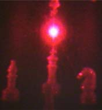
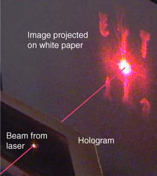

While a transmission hologram is usually viewed by looking through it toward the diverged beam of a laser, the image can also be projected. Instead of diverging the beam of the laser with a lens so that it will cover the entire hologram, the undiverged beam of the laser is directed through the hologram. Since it interacts with a very small part of the hologram, the projected image is from one narrow perspective. If the hologram is moved so that the laser sweeps over different areas, the projected image will change to show the perspective associated with the laser position.
The projected image is a real image, and as illustrated above right, there are two images, on erect and one inverted. A small range of different images may be viewed in the video clip at right. The clip may be played, or you can grab the slider with the mouse and manually cycle the image through it's different viewpoints.
 |

|